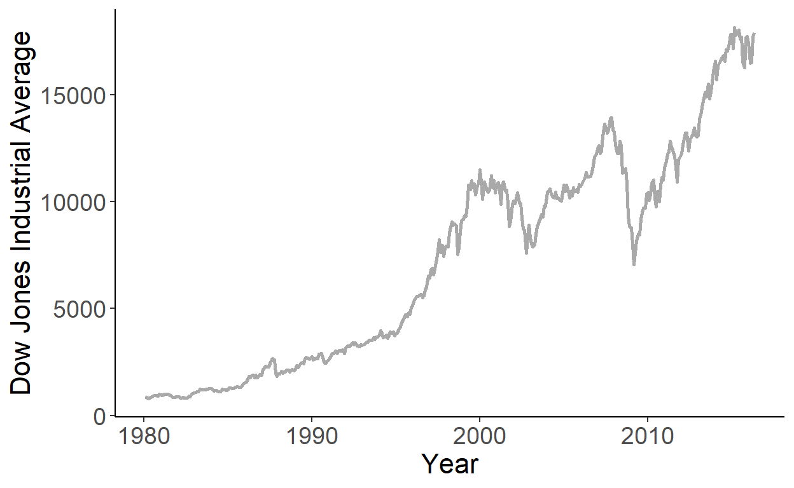
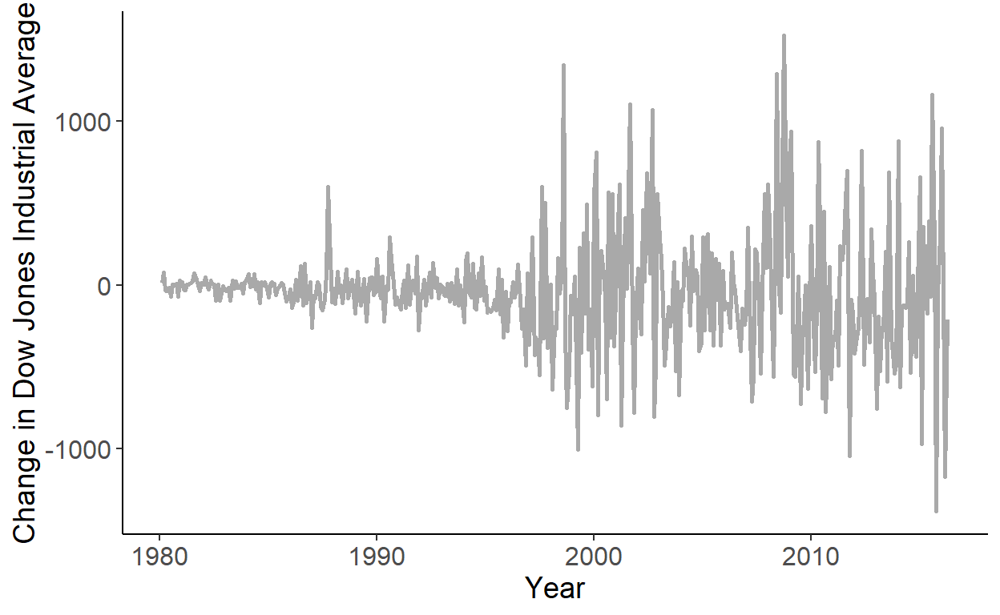

Chapter 2 – Features of Time Series Data

2.1 Stochastic Process and Time Series
A time series is an observed sequence of realizations of chronologically stored random variables. The sequence of random variables indexed by time, \(\{\ldots,Y_{-1},Y_0,Y_1,\ldots,Y_T,Y_{T+1}\ldots\}\), is referred to as the stochastic process. Thus, a time series is a realization of a stochastic process.
We can think of a time series as a finite sample from an underlying doubly–infinite sequence: \(\{\ldots,y_{-1},y_{0},y_1,y_2,\ldots,y_T,y_{T+1},y_{T+2},\ldots\}\). This is to say that the history extends beyond the starting and ending time periods of the sample at hand.
But we don’t observe, or choose not to observe, those time periods. Instead, we observe and work with the sample of time series \(\{y_1,y_2,\ldots,y_T\}\), which we can also denote as \(\{y_t\}_{t=1}^{T}\) or simply \(\{y_t\}\). Similarly, we denote the stochastic process over the observed time periods as \(\{Y_t\}_{t=1}^{T}\) or \(\{Y_t\}\).
2.2 Stationarity
If all random variables, from where the time series are drawn, have the same distribution, then we refer to such data as stationary time series. Stationarity is an important feature, and the assumption on which time series econometrics heavily relies.
Consider a simplest kind of a time series comprised of realizations from independent and identically distributed (iid) normal random variable with zero mean and constant variance: \(Y_t \sim iid~\text{N}\left(0,\sigma^2\right)\). The following graph plots the realized time series from this process:
Figure 2.1: White noise process

Such time series is a realization of what is referred to as a white noise process.9 That is, \(\{Y_t\}\), is a white noise process if: \[\begin{align*} & E(Y_t) = 0,\;~\forall~t\\ & Var(Y_t) = \sigma^2,\;~\forall~t\\ & Cov(Y_t,Y_{t-k}) = 0,\;~\forall~k \ne 0 \end{align*}\]
Because each observation is drawn from the same distribution, white noise is a stationary process. Indeed, it is a special type of the stationary process insofar as its mean, variance, and covariance are time-invariant. Note, for stationarity, neither the mean nor the covariances are required to be equal to zero. Thus, \(\{Y_t\}\) is a stationary process10 if its mean and variance are independent of \(t\), and the autocovariances are independent of \(t\) for all \(k\).
Why should we care about stationarity? The gist of the matter is that in each time period we only observe one realization of the respective random variable. We don’t have the sample of observations for that period—just a single observation is all we have. Of course, over time, we have many such observations—one for each period. The question then is, could we use this sample of time series and conclude something about the moments of the stochastic process? Stationarity in conjunction with ergodicity enables us to do just this.
Ergodicity implies independence of two random variables that are far apart from each other in the stochastic process. That is, if \(\{Y_t\}\) is stationary and ergodic with \(E(Y_t)=\mu\), then \(Cov(Y_t,Y_{t-k}) = 0\) for some large integer \(k\). More importantly, when the process is stationary and ergodic, the mean of the sample of time series converges to the mean of the stochastc process as the sample size increases.
2.3 Serial Dependence
It is more of the norm rather than the exception for a time series to be correlated over time. Indeed, because of the sequential nature of the stochastic process, we commonly observe dependence among the temporally adjacent random variables. That is, we expect \(Y_t\) and \(Y_{t-k}\) to be correlated for a reasonably small integer \(k\). Such correlation, referred to as the autocorrelation, or more specifically, the \(k^{th}\) order autocorrelation is given by: \[\rho_k=Cor(Y_{t},Y_{t-k}) = \frac{Cov(Y_{t},Y_{t-k})}{\sqrt{Var(Y_{t})}\sqrt{Var(Y_{t-k})}},\;~~k=1,2,\ldots\]
Under the assumption of stationarity, \(Var(Y_{t})=Var(Y_{t-k})\), so the autocorrelation can be simplified to: \(\rho_k= \frac{Cov(Y_{t},Y_{t-k})}{Var(Y_{t})}.\)
Autocorrelations are commonly illustrated via the so-called autocorrelogram, which plots the sequence of autocorrelation coefficients against the lags at which these coefficients are obtained. The following figure illustrates an autocorrelogram for a sample of time series with 240 observations:
Figure 2.2: Autocorrelation

For each lag, \(k\), the vertical line extending from zero represents an estimate of the autocorrelation coefficient at that lag. The dashed lines denote the 95% confidence interval, given by \(\pm 1.96/\sqrt{T}\), where \(T\) is the size of the time series sample.
Another relevant measure of the time series dependence is partial autocorrelation, which is correlation between \(Y_t\) and \(Y_{t-k}\) net of any correlations between \(Y_t\) and \(Y_{t-k+j}\), for all \(j=1,\ldots,k-1\). Similar to autocorrelations, partial autocorrelations, here denoted by \(\pi\), can also be illustrated using autocorrelograms:
Figure 2.3: Partial Autocorrelation

Autocorrelogram is a useful tool for detecting dynamic properties of a time series. For example, autocorrelations of the stationary and ergodic stochastic process dissipate to zero as \(k\) increases. Thus, by observing autocorrelograms, in conjunction with a visual inspection of the time series, we can get an idea whether the process is stationary.11 If a time series appear nonstationary, we can make changes to it, so that the transformed series becomes stationary.
2.4 Transformations
It is common to transform time series by taking logarithms (if applicable), by first-differencing the series, or by first-differencing the logarithms of the series. Such transformations are done to work with a suitable variable for the desired econometric analysis, or to address some underlying issues of the series (e.g., nonstationarity).
Consider the Dow Jones Industrial Average (commonly referred to as the Dow Jones Index), for example. In levels, the series are clearly nonstationary. This is because the series are trending upward (on average), and also because the series become more volatile over time.
Figure 2.4: Dow Jones Industrial Average
Could first-differencing resolve the issue of nonstationarity? Turns out, not exactly. The first-differenced Dow Jones Index, while no longer trending, reveals increasing volatility over time.
Figure 2.5: Dow Jones Industrial Average: Differences
As it turns out, we can largely resolve the issue if we first-difference the log-transformed series. When we log-transform the series, the difference in observations from two different period is no longer measured in absolute terms, rather it is measured in relative terms. Then, by first-differencing the log-transformed series we, in effect, obtain a measure of a growth rate of the original series. The growth rate of the Dow Jones Index appears to be stationary.
Figure 2.6: Dow Jones Industrial Average: Log-Differences

Technically, this is a Gaussian white noise process as the random variables are iid normally distributed. Without the normality assumption we would have an Independent white noise process. Without the indepence assumption we would have simply a white noise process.↩︎
To be precise, this is a definition of covariance-stationarity or weak form of stationarity. Strict stationarity is defined by time invariant joint distribution of random variables.↩︎
There are, of course, formal tests of stationarity, which we will discuss in one of the subsequent chapters.↩︎